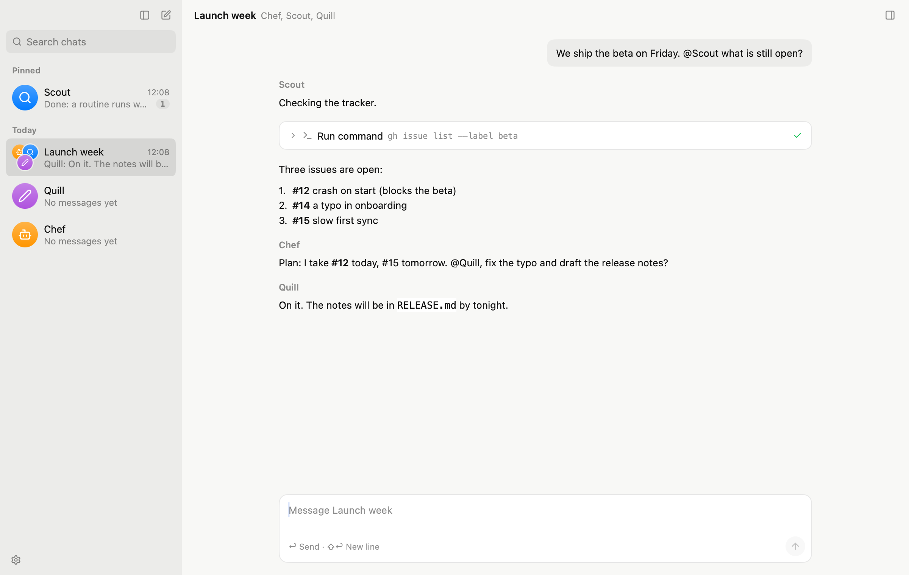

Baggy is a desktop assistant. Talk to a bot one to one, or put a few in a group chat and watch them split the work, hand it off, and report back.
Free and open source, for macOS, Windows and Linux.

Each bot has a description, a model, a memory and a folder of its own. Chef leads, and creates teammates when you agree.
Members take turns, reply or pass, mention each other and hand work on. The one you @ goes first.
Files, search and shell commands in real terminals, in the folder you choose, with your approval or an automatic review.
A MEMORY.md and a diary per bot, read every turn, so a bot remembers what you told it last week.
"Every weekday at 8, a short brief." Checks run first and only wake the bot when something is new.
Plug in any MCP server. Bots call its tools from small scripts, so only the result reaches the model.
Anthropic, OpenAI, DeepSeek, OpenRouter, Ollama, or any server that speaks their APIs. Your keys stay on your computer.
The latest release, from GitHub.
Apple silicon and Intel in one app. Open the disk image and drag Baggy to Applications.
Windows 10 or 11. The installer puts Baggy in your user folder, where it updates itself.
x86-64 and Arm64. Install for your user with the script, which updates itself, or use the Debian package.
On Linux: curl -fsSL https://github.com/zucchiniEvader/baggy/releases/latest/download/install.sh | sh